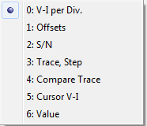

samplepoint n Selects a trace sample point n (0 to 255) to set the cursor location. This is the same as changing the Sample Point spin edit value.
cursor 0 Turns on the cursor display. cursor 1 Turns off the cursor display. This is the same as un-checking or checking the Cursor check box.
mark Marks the reference position for the cursor function. This is the same as clicking the Mark button.
compare 0 Selects Compare radio item Off. compare 1 Selects Compare radio item to Trace. compare 2 Selects Compare radio item to Part.
comparestep n Sets the + Compare pin value to the integer n following comparestep. The set value for n is 1 to 1024.
comparetrace n Sets the - Compare pin value to the integer n following comparestep. The set value for n is 1 to 1024.
value n Selects the parameter value to calculate from the trace and cursor locations. Where n is an integer 1 to 9.
0 Calculate resistance for slope (absolute) between the marked value and the current cursor position.
1 Calculate current gain between traces. Use mark for the reference trace and the cursor position for the second trace.
2 Calculate transconductance between traces. Use mark for the reference trace and the cursor position for the second trace.
3 Calculate the Early Voltage intercept point using the marked value and the current cursor position.
4 Caculate capacitance using the trace loop voltage magnitude and current magnitude.
5 Find the maximum voltage for the trace.
6 Find the minumum voltage for the trace.
7 Find the maximum current for the trace.
8 Find the minum current for the trace.
9 Mark the room temperature (25C) voltage for a diode. The diode voltage change is converted to degrees celcius.
1 Calculate current gain between traces. Use mark for the reference trace and the cursor position for the second trace.
2 Calculate transconductance between traces. Use mark for the reference trace and the cursor position for the second trace.
3 Calculate the Early Voltage intercept point using the marked value and the current cursor position.
4 Caculate capacitance using the trace loop voltage magnitude and current magnitude.
5 Find the maximum voltage for the trace.
6 Find the minumum voltage for the trace.
7 Find the maximum current for the trace.
8 Find the minum current for the trace.
9 Mark the room temperature (25C) voltage for a diode. The diode voltage change is converted to degrees celcius.
update 0 Un-checks the Update With Sweep Box. update 1 Checks the Update With Sweep Box. This causes the parameter selected with value to be updated each time a sweep takes place. Otherwise, the value is only updated when a parmeter is selected.

show n Causes the index item in the list above to be checked. The index is the integer n (0 to 6) following show. The checked item is displayed as text at the top of the trace plot.
hide n Works the same as show except the index item is un-checked.
Script Item:
Main: